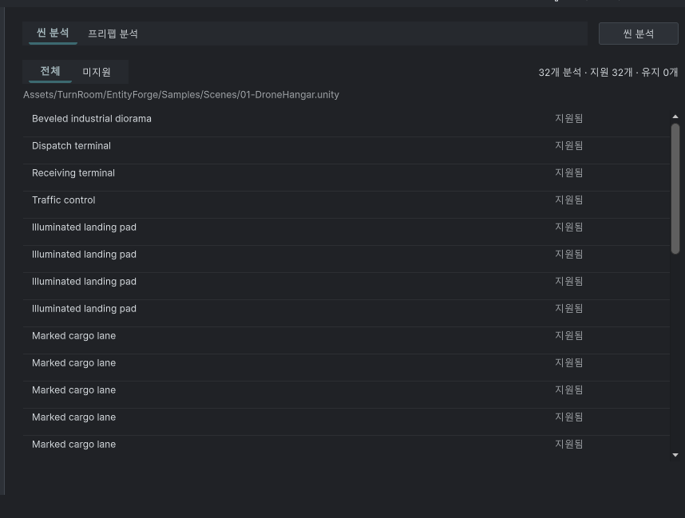

Tracefolio REPORTS & ISSUES
Tracefolio REPORTS & ISSUESEntity Forge 중복 탭 제거·단일 표시 필터·설명 유지
검증 대기씬/프리팹만 탭으로 남기고 전체/미지원은 표시 선택 상자로 바꿨습니다. 분석 완료 후에도 설명을 계속 표시합니다.
작업 결과
씬·프리팹 전환은 상단 탭으로 유지하며 아래 전체·미지원 탭 줄을 제거했습니다. 목록 필터는 왼쪽의 표시 선택 상자 한 개입니다. 현재 씬 설명과 프리팹 안내는 완료 후에도 계속 표시합니다.
변경 내용
적용 내용
UI Toolkit DropdownField를 UXML로 작성하고 선택값을 기존 unsupportedOnly 필터 상태에 연결했습니다. 공유 UITemplate.Apply의 선택 패널 처리를 사용합니다. 이전 필터 범위 예외 수정과 행 선택·호버·대상 이동 코드는 유지했습니다. Unity 진행 다이얼로그는 완료 시 닫히며 인라인 100% 게이지는 다시 추가하지 않았습니다. 9개 언어 문서의 설명 숨김 안내도 현재 요구로 고쳤습니다.

사용자 기준 원본 55,472바이트를 편집 없이 보존했습니다. 수정 후 실제 화면은 포커스 제한으로 미확보이며 전후 시각 검증 완료로 표시하지 않습니다.
검증
7개 어셈블리 설치 Unity 참조 컴파일 및 마지막 소스 해시 대조 통과. DropdownField 한 개/기존 필터 버튼 제거, 선택값과 필터 연결, 분석 결과와 무관한 설명 표시 조건을 검사했습니다. UI 456키×9언어와 치환 인자·문서 9개/126개 링크 검사 통과. 388개 에셋 미리보기 패키지 원본/메타 byte readback 통과. 검사 JSON
남은 사항
화면 포커스 금지 조건으로 Unity를 조작하지 않았습니다. 실제 필터 선택/취소/반환값, 완료 전후 배치·9언어 레이아웃은 네이티브 미검증입니다. 수정 후 캡처와 문서 시각 검증은 보류하며 기존 캡처 해시는 보존합니다. 교훈 검토: 탭은 작업 모드 전환에, 결과 조건은 필터에 배치한다는 이번 제품 결정을 메뉴얼에 기록했습니다. 새로운 전역 규칙 추가 없음.
작업 시간
- 제안 시간: 3~7분
- 실제로 완료된 시간: 2026-11-02 20:18:26 KST 시작. 20:21:22 KST 구현·비GUI 검사·패키지 검증 완료(2분56초). 공개 배포 확인 별도. 네이티브 실행 검증 완료 시각 없음.
- XERJ: 실패 — Xerj.ps1 Status 노드 미실행 확인 후 rg·현재 소스·컴파일과 구조 검사로 대체.